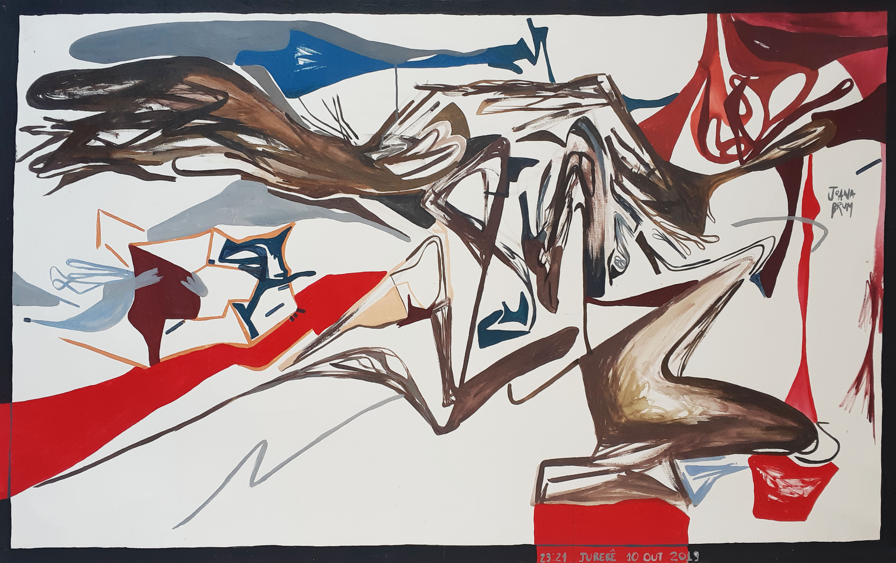

trabalhos
biografia
contato
instagram
shop
Tinta quase sem água e sentimentos pouco diluídos. A textura se forma como uma memória do desenrolar do processo, algo que evidencia toda a caterse que ocorreu ali.
Título do Conjunto
Data, Ano

Título do Conjunto
Data, Ano
Título do Conjunto
Data, Ano